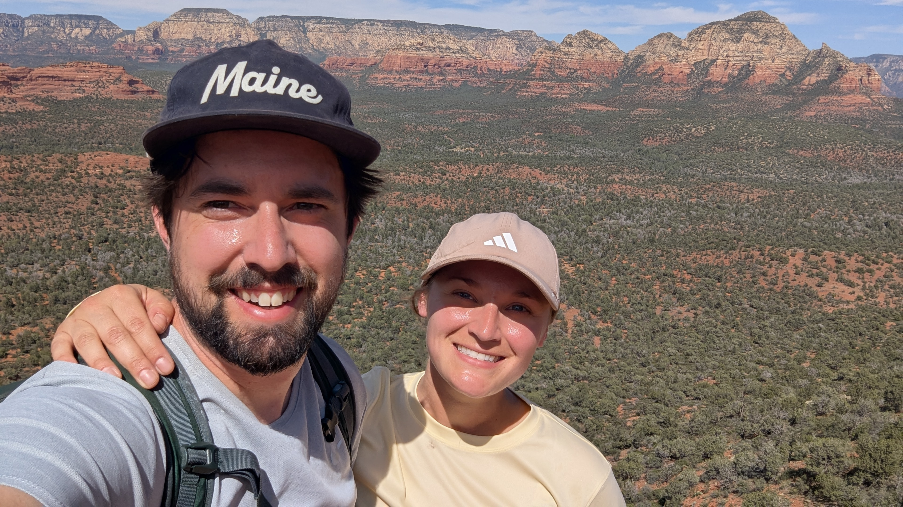
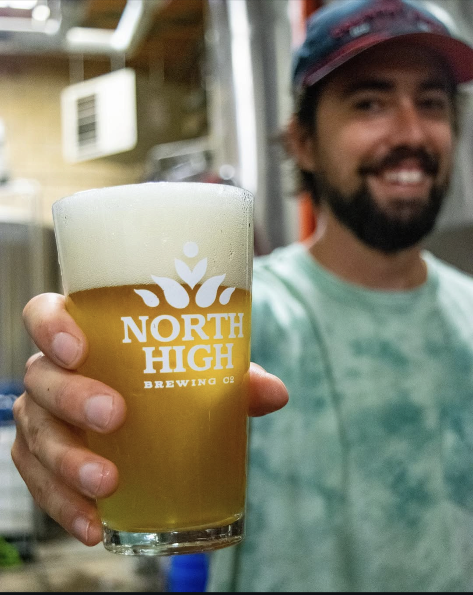

University of Cincinnati

I chose the Information Systems program because it fits right in the middle of my career trajectory. I do not want to abandon manufacturing and become a pure software engineer. I'm trying to be the person who understands manufacturing problems and knows how to solve them with data and technology.
| Course | Course Name |
|---|---|
| IS7012 | Programing and Modern Frameworks |
| IS7032 | Database Systems |
My career objectives is to combinie my manufacturing Experience with technology, data and information systems
My wife and I enjoy going on hiking trips and spending time outdoors. We recently went to Sedona for a week.

I worked for 8 years in the brewing industry, now it is more of a hobbie than a career. Below is a pciture of my first commercial recipe. With a link to the brewery i'm a part owner of.
